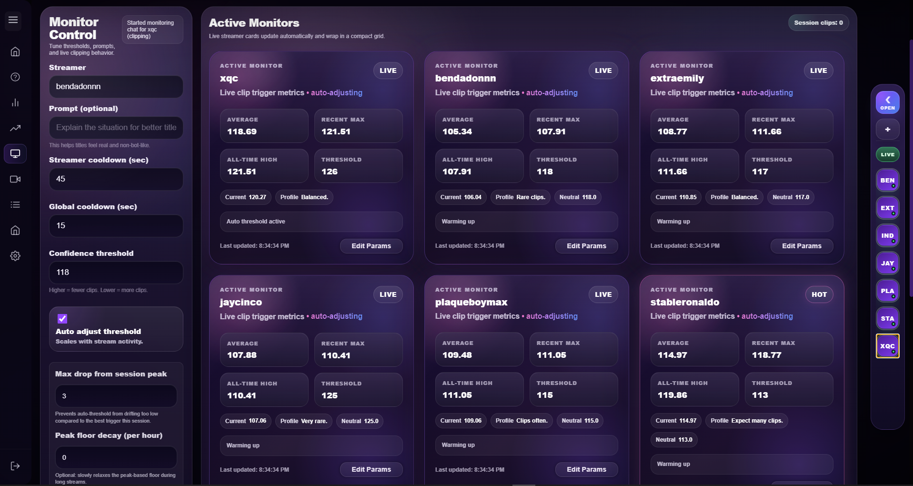
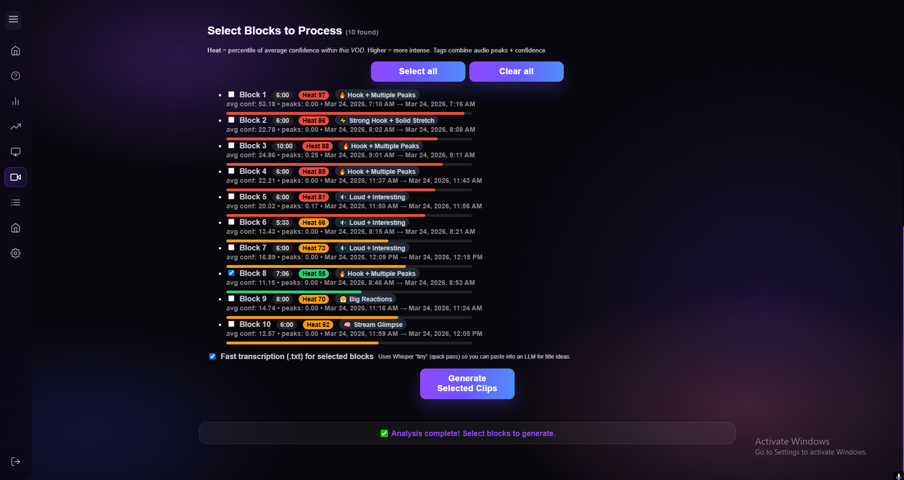
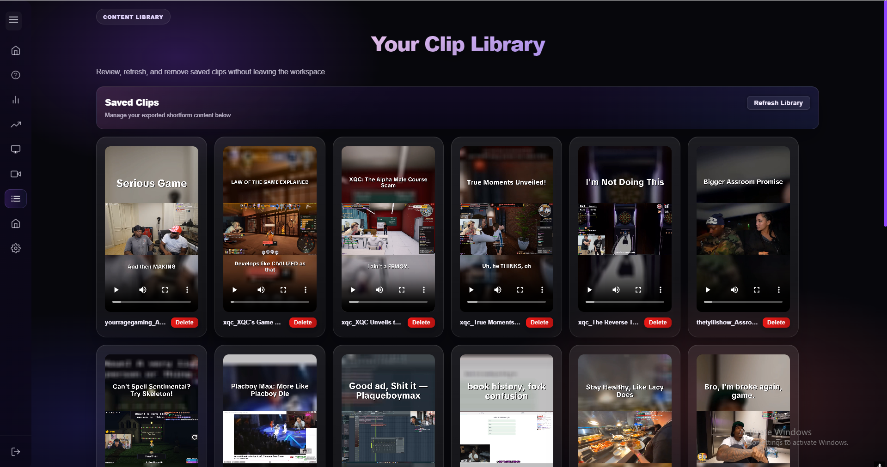

Workflow page
Live stream in, saved clips out, with review points in between.
Cliprr is useful when the path is visible: the stream is monitored live, signals clear a threshold, clips are created, a second pass can refine the result, and saved outputs stay in a library.
Step one
Run the live monitor while the stream is happening.
Thresholds
Cooldowns
The operator controls what counts as clip-worthy through thresholds, cooldowns, and live signal behavior while the monitor is still running.

Step two
Use VOD review when a second pass improves the final output.
VOD review is optional, but useful when the live pass found the right stretch and you want to review blocks before final output.

Step three
Keep generated clips in a library that can still be worked.
After generation, clips remain sortable, reviewable, reusable, and removable instead of becoming hard-to-track files.

Where the workflow feels deeper
Cliprr stays controllable instead of acting like black-box automation.
The workflow is believable because threshold adjustments, cooldown behavior, clip frequency, learning suggestions, and saved outputs all stay visible somewhere in the product.
That matters when a creator wants tighter control over clip frequency instead of a vague "smart" setting.
The system can suggest adjustments without silently rewriting what the monitor will do next.
The generated clips do not disappear from the workflow once the first output has been created.
Reserved motion media
Workflow sequence placeholder
This section should eventually become a literal sequence showing monitor activity, threshold changes, second-pass review, and library handoff in motion.